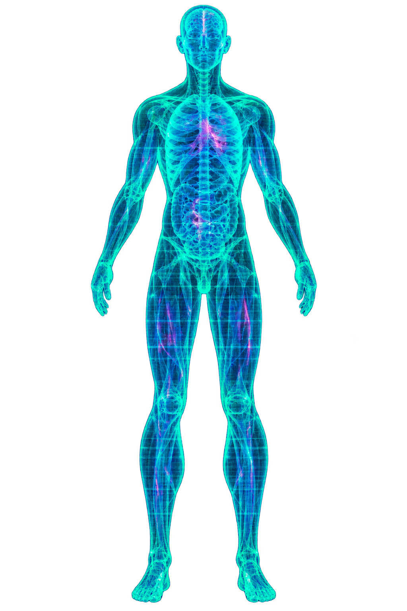

Physical Health
Demonstration profile. All measurements are simulated.
Sleep Overview
Recent sleep duration
Last recorded sleep
8h 30m
Mission day 24
Daily Check-In
Your latest recorded routine
- Reported fatigue
- 2 / 5 — Mild
- Reported sleep quality
- Good
- Exercise logged
- 30 minutes
These entries describe the demonstration profile.
Exercise Plan
Demonstration schedule · Mission day 24
1 of 2 planned sessions logged
-
Aerobic Session
LoggedEquipment: CEVIS
Cycle ergometer session for aerobic conditioning.
Recorded duration: 30 minutes · Simulated entry
-
Resistance Session
PendingEquipment: ARED
Resistance training session from the individual exercise plan.
No session recorded for today.
Equipment Availability
Simulated availability for this demonstration.
- ARED Available
- CEVIS Available
- T2 Unavailable
View Session Details
Resistance Session · ARED
This demonstration shows a scheduled resistance session. Specific exercises, loads, sets, and repetitions have not been assigned.
- Objective
- Muscular and skeletal conditioning
- Equipment
- Advanced Resistive Exercise Device
- Prescription
- Not configured in this demonstration
In an operational system, session instructions would come from the astronaut's reviewed exercise plan. Missing sessions do not automatically change the prescription.
Learn about ISS exercise equipment at NASA (opens in a new tab)Exercise logging will be available once the page script is connected.
Illustrative schedule only. Not a personalized exercise prescription.
Crew Member: Alex Morgan
Flight Engineer · Crew ID: AST-001

Latest Measurements
- Heart rate
- 70 bpm
- Oxygen saturation
- 98 %
- Respiratory rate
- 16 breaths/min
Simulated heartbeat
Illustrative waveform · Not a measured ECG
Simulated readings · Mission day 24, 08:30
Radiation Exposure
Personal dosimeter · Simulated data
12.0 mSv
0.5 mSv
Exposure readings require mission-specific monitoring criteria before a health status can be assigned.
Last update: Mission day 24, 08:30
About These Readings
Accumulated mission dose represents exposure recorded since the start of the mission.
The 24-hour value represents exposure recorded during the latest complete 24-hour period.
Values are illustrative and are not live measurements. No approved monitoring limits are configured in this demo.
Health Status
Illustrative scenario · Not calculated from live readings
Review needed
Check the highlighted indicator below.
- Heart rate Within range
- Oxygen saturation Within range
- Fatigue Needs review
- Exercise notes No data
View Details & Activities
Why is fatigue highlighted?
This prototype uses a preset warning to demonstrate the interface. It is not derived from the displayed fatigue score.
Next Steps
In the completed application, this area will explain the rule triggered, the records involved, and the applicable reviewed procedure.
Activity Library
Activity descriptions and references will be available here. Personalized exercise recommendations are not implemented.
Demonstration states only. Monitoring ranges and procedures require expert validation before real use.